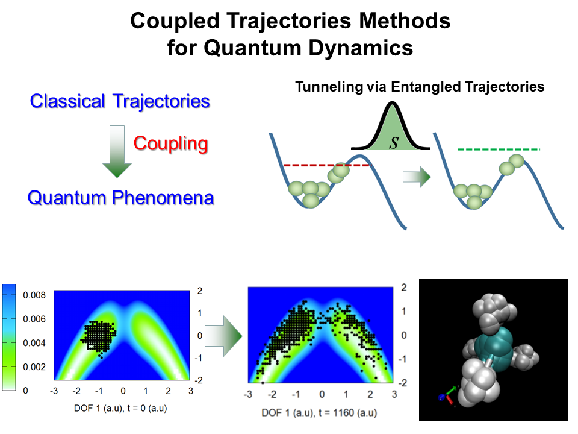
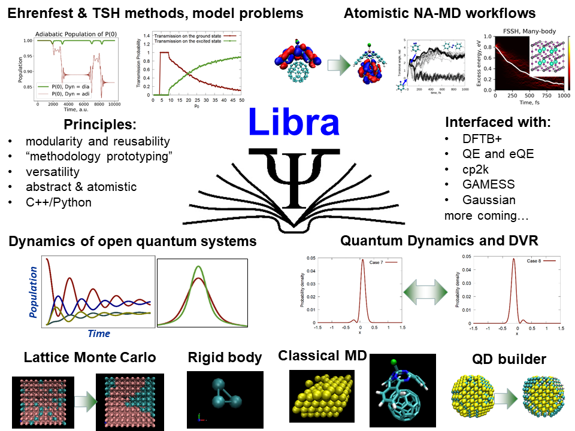

## **1. Theory and Methodology for Quantum Dynamics**
We develop, assess, and apply efficient methods for quantum and nonadiabatic dynamics. Our goal is to establish where common
approximations are reliable, design better algorithms where they are not, and make predictive simulations practical for molecules,
nanostructures, and condensed-phase materials.
#### **1.1. Methodology assessment - en route to Jacob's ladder of nonadiabatic dynamics methods**
<img class="research-figure research-figure-left" style="float: left; margin-left: 15px; margin-right: 15px; margin-top: 15px; margin-bottom: 15px;"
title="Jacob's ladder" alt="Jacob's ladder" src="images/research2.png">
<p>Nonadiabatic dynamics offers many competing hopping, decoherence, propagation, and electronic-structure choices, yet their
domains of validity are not always clear. We build broader benchmarks, identify failure modes, and compare algorithms under
controlled conditions. The long-term aim is a community-tested “Jacob’s ladder” that helps researchers choose methods based
on demonstrated accuracy, stability, and cost.</p>
<div class="representative-papers"><strong>Representative papers</strong>
<ul>
<li>Akimov, A. V. “<a href="https://doi.org/10.1021/acs.jctc.5c01635">Toward Community-Driven Benchmarking and Ranking of Nonadiabatic Dynamics Methodologies</a>.” <i>J. Chem. Theory Comput.</i> <b>2025</b>, 21, 11821–11846.</li>
<li>Shakiba, M.; Han, D.; Mukherjee, S.; Akimov, A. V. “<a href="https://doi.org/10.1063/5.0314503">Assessment of Trajectory Surface Hopping Methods in Long-Time Nonadiabatic Dynamics</a>.” <i>J. Chem. Phys.</i> <b>2026</b>, 164, 104110.</li>
<li>Smith, B. A.; Akimov, A. V. “<a href="https://doi.org/10.1063/1.5122770">A Comparative Analysis of Surface Hopping Acceptance and Decoherence Algorithms within the Neglect of Back-Reaction Approximation</a>.” <i>J. Chem. Phys.</i> <b>2019</b>, 151, 124107.</li>
</ul></div>
#### **1.2. New Methodologies and Computational Workflows for NA-MD**
<p>Methodology development is central to our work. We implement and assess mixed quantum–classical methods derived from
**exact factorization**, including SHXF, MQCXF, and MFXF, and develop **quantum-trajectory surface hopping (QTSH)** for
multistate dynamics. We also design lower-cost and **NAC-free approaches** for simulations where derivative couplings are
unavailable or too expensive.</p>
<img class="research-figure research-figure-left" style="float: left; margin-left: 15px; margin-right: 15px; margin-top: 15px; margin-bottom: 15px;"
title="Methods and Practical Tools" alt="Methods and Practical Tools" src="images/research3.png">
<p>Reliable dynamics also requires robust treatment of **state tracking and phase correction**, trivial crossings, and mappings
between one-electron and many-body states. For atomistic calculations, Libra workflows currently connect these methods to
**CP2K** and **DFTB+**; interfaces to **PySCF** and **OpenMolcas** are under active development. Machine-learned Hamiltonian
mappings and reduced-cost workflows extend the accessible system sizes, timescales, and trajectory ensembles.</p>
<div class="representative-papers"><strong>Representative papers</strong>
<ul>
<li>Han, D.; Akimov, A. V. “<a href="https://doi.org/10.1021/acs.jctc.4c00343">Nonadiabatic Dynamics with Exact Factorization: Implementation and Assessment</a>.” <i>J. Chem. Theory Comput.</i> <b>2024</b>, 20, 5022–5042.</li>
<li>Han, D.; Martens, C. C.; Akimov, A. V. “<a href="https://doi.org/10.1021/acs.jctc.4c01751">Generalization of Quantum-Trajectory Surface Hopping to Multiple Quantum States</a>.” <i>J. Chem. Theory Comput.</i> <b>2025</b>, 21, 2839–2853.</li>
<li>Akimov, A. V. “<a href="https://doi.org/10.1021/acs.jpclett.4c02909">State Tracking in Nonadiabatic Molecular Dynamics Using Only Forces and Energies</a>.” <i>J. Phys. Chem. Lett.</i> <b>2024</b>, 15, 11944–11953.</li>
<li>Shakiba, M.; Stippell, E.; Li, W.; Akimov, A. V. “<a href="https://doi.org/10.1021/acs.jctc.2c00297">Nonadiabatic Molecular Dynamics with Extended Density Functional Tight-Binding: Application to Nanocrystals and Periodic Solids</a>.” <i>J. Chem. Theory Comput.</i> <b>2022</b>, 18, 5157–5180.</li>
</ul></div>
#### **1.3. Entangled trajectories theories**
<p></p>
<p>Coupled-trajectory formulations provide an intuitive route to quantum nuclear effects while retaining much of the flexibility
of classical mechanics. We develop entangled trajectories Hamiltonian dynamics (ETHD) and related quantum-trajectory methods
to represent tunneling, zero-point energy, branching, and other nonlocal effects through interactions within a trajectory ensemble.
Current work emphasizes stable quantum potentials and adaptive trajectory-guided basis representations.</p>
<div class="representative-papers"><strong>Representative papers</strong>
<ul>
<li>Smith, B. A.; Akimov, A. V. “<a href="https://doi.org/10.1063/1.5022573">Entangled Trajectories Hamiltonian Dynamics for Treating Quantum Nuclear Effects</a>.” <i>J. Chem. Phys.</i> <b>2018</b>, 148, 144106.</li>
<li>Akimov, A. V. “<a href="https://doi.org/10.1063/5.0289091">Stable Direct Dynamics with Quantum Potential: Lorentzian Trajectory Basis Function Is All You Need</a>.” <i>J. Chem. Phys.</i> <b>2025</b>, 163, 171102.</li>
<li>Dutra, M.; Garashchuk, S.; Akimov, A. V. “<a href="https://doi.org/10.1002/qua.27078">The Quantum Trajectory-Guided Adaptive Gaussian Methodology in the Libra Software Package</a>.” <i>Int. J. Quantum Chem.</i> <b>2023</b>, 123, e27078.</li>
</ul></div>
_____
## **2. Open-Source Software for Nonadiabatic and Quantum Dynamics**
<p>Our software effort is centered on **[Libra](https://github.com/Quantum-Dynamics-Hub/libra-code)**, the group's actively
developed open-source library for quantum and nonadiabatic dynamics. Libra turns new theoretical ideas into testable,
reproducible algorithms and connects them to practical atomistic workflows.</p>
<p></p>
<p>Libra provides modular C++ and Python components for trajectory surface hopping, Ehrenfest and coupled-trajectory dynamics,
decoherence, grid and wavepacket propagation, open quantum systems, model Hamiltonians, and analysis. Interfaces to electronic-
structure packages—including DFTB+, CP2K, Quantum ESPRESSO, GAMESS, and PySCF—support simulations of realistic molecules and
materials. The same platform serves method development, systematic benchmarking, teaching, and applied research.</p>
<p>Development takes place in the <a href="https://github.com/Quantum-Dynamics-Hub/libra-code">Libra repository</a>, with
maintained examples in the <a href="https://github.com/compchem-cybertraining/Tutorials_Libra">Libra tutorials</a>.</p>
<div class="representative-papers"><strong>Representative papers</strong>
<ul>
<li>Shakiba, M.; Smith, B.; Li, W.; Dutra, M.; Jain, A.; Sun, X.; Garashchuk, S.; Akimov, A. V. “<a href="https://doi.org/10.1016/j.simpa.2022.100445">Libra: A Modular Software Library for Quantum Nonadiabatic Dynamics</a>.” <i>Software Impacts</i> <b>2022</b>, 14, 100445.</li>
<li>Temen, S.; Jain, A.; Akimov, A. V. “<a href="https://doi.org/10.1002/qua.26373">Hierarchical Equations of Motion in the Libra Software Package</a>.” <i>Int. J. Quantum Chem.</i> <b>2020</b>, 120, e26373.</li>
<li>Dutra, M.; Garashchuk, S.; Akimov, A. V. “<a href="https://doi.org/10.1002/qua.27078">The Quantum Trajectory-Guided Adaptive Gaussian Methodology in the Libra Software Package</a>.” <i>Int. J. Quantum Chem.</i> <b>2023</b>, 123, e27078.</li>
</ul></div>
____
## **3. Computational Studies of Nonadiabatic and Quantum Dynamics in Solar Energy Materials**
<p>We apply nonadiabatic dynamics to determine how nuclear motion, electronic structure, coherence, and decoherence control
excited-state lifetimes. Target processes include carrier cooling and recombination, charge and energy transfer, trapping,
spin relaxation, and photoinduced transformations.</p>
<img class="research-figure research-figure-right" style="float: right; margin-left: 5px; margin-right: 5px; margin-top: 5px; margin-bottom: 5px;"
title="applications" alt="applications" src="images/research1.png">
<p>Our applications span semiconductor and oxide nanoclusters, two-dimensional materials, perovskites, fullerenes,
molecular and solid-state systems, and organic–inorganic interfaces. By connecting atomistic structure to nonradiative
pathways, we seek design principles for controlling energy flow and suppressing unwanted losses in energy materials.</p>
<div class="representative-papers"><strong>Representative papers</strong>
<ul>
<li>Recio-Poo, M.; Bromley, S. T.; Sayres, S. G.; Illas, F.; Akimov, A. V.; Morales-García, Á. “<a href="https://doi.org/10.1021/acs.jpclett.6c01707">Thermally Activated Fluxionality Accelerates Nonradiative Decay in Titania Nanoclusters</a>.” <i>J. Phys. Chem. Lett.</i> <b>2026</b>, 17, 7907–7915.</li>
<li>Yasin, K.; Shakiba, M.; Akimov, A. V. “<a href="https://doi.org/10.1021/acs.jpclett.6c00006">Electronic Shannon Entropy as an Effective Descriptor of Nonradiative Dynamics in Dense Manifolds of Excited States: Case Study of C20, C60, C70, C76, C84, C86, and C90 Fullerenes</a>.” <i>J. Phys. Chem. Lett.</i> <b>2026</b>, 17, 2812–2822.</li>
<li>Zabihi, H.; Zhang, Q.; Khayati, G. R.; Irannejad, A.; Akimov, A. V. “<a href="https://doi.org/10.1021/acs.jctc.5c00808">Quantum Confinement Effects in Monolayer Black Phosphorus: Revision of the Nonradiative Recombination Dynamics</a>.” <i>J. Chem. Theory Comput.</i> <b>2025</b>, 21, 7991–8009.</li>
</ul></div>